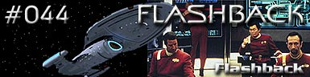
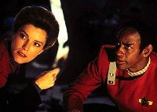
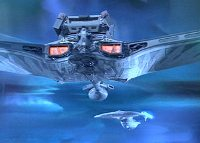
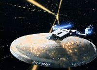
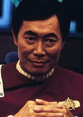
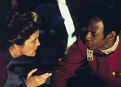

|
Voyager
Temporada 3

Análise do episódio por
Daniel Sasaki


|

|
MANCHETE
DO EPISÓDIO
Data Estelar: 50126.4  Na Voyager, o Doutor reanima Tuvok, e Janeway se pergunta o que a menina tem a ver com as vivências na Excelsior. Tudo o que Tuvok se lembra é que os Klingons emboscaram a nave na nebulosa, impedindo que Sulu continuasse em sua missão de resgate. 
O episódio foi feito com o propósito de comemorar o trigésimo aniversário da primeira transmissão de Jornada. Num apanhado geral, a produção fez um bom trabalho. Talvez ninguém esperasse que toda a seqüência inicial do sexto filme para cinema ("A Terra Desconhecida") fosse recriada com tamanha fidelidade. Pelo menos do ponto de vista da produção. Não só todos os figurantes que estavam na ponte da USS Excelsior foram recrutados, entre eles a veterana Grace Lee Whitney (Janice Rand) e Jeremy Roberts (Valtane), como a ponte da nave foi recriada com incrível esmero. Infelizmente os atores não se esforçaram tanto para reproduzir o tom original, muito relaxados em seus papéis, e a necessidade de recriar as tomadas por outro ângulo que não o visto no cinema acabou excluindo as melhores opções de câmera, já utilizadas quando da produção do filme.  Outra denúncia de que estávamos vendo Voyager foi a falta de apreço para com a cronologia estabelecida previamente em Jornada. Por exemplo, o tenente Valtane morre no fim do episódio, embora tenha sobrevivido em "A Terra Desconhecida" e aparecido na ponte da nave ao final do filme. Ocorreram outras inconsistências quanto a comentários relacionados à questão do acordo Federação/Klingons, a distância temporal entre a explosão de Praxis e o julgamento de Kirk, e sobre a idade e o histórico de Tuvok. Nesse ponto, a série de desmentirá diversas vezes.  Infelizmente o brilho se desfaz quando se esquece o fator nostalgia. Em termos de enredo, o episódio se perde em uma história arrastada e pouco produtiva. Toda a história para levar Tuvok ao passado não parece mais que uma desculpa esfarrapada, e a premissa de um vírus que se disfarça de memória não é muito convincente. Agora, passando por cima disso, precisamos reconhecer que os eventos descritos, com todos os seus furos de continuidade, servem para enriquecer ainda mais o background histórico de Jornada VI. Por outro lado, não é uma missão que o capitão Sulu (e, por consequência, a audiência) vá gostar de lembrar no futuro. A missão de resgate é um fracasso absoluto, que não resulta em nada além de mais um confronto com os Klingons. Felizmente os toques "comemorativos" do episódio perduram mesmo neste momento, quando vemos o capitão Klingon Kang, outro velho conhecido da série original. Como atrativos, os efeitos especiais do episódios também não podem passar desapercebidos. Foram excelentes, mesmo para os padrões que Voyager já vinha usando. Apesar de muitas cenas terem sido reaproveitadas do sexto filme, como a explosão da lua de Praxis, as seqüências da nebulosa e da batalha foram excepcionais. Uma miniatura da Excelsior foi construída especialmente para "Flashback".  A atuação de Tim Russ esteve muito boa no episódio. Até aqui, via-se Tuvok como o mais controlado e típico dos Vulcanos. Chegava a ser entediante às vezes. Ele era desprovido de qualquer traço original ou que o tornasse particular. Mas, em "Flashback", descobre-se que por trás desse controle todo já viveu um rapaz rebelde que olhava os humanos com inferioridade e juízos de valor. Alguém que não aceitava a violação de regras ou ordens baseadas em aspectos emocionais. Vê-se um inexperiente Tuvok que enfrentava um veterano espacial á altura de Sulu. Aprende-se muito sobre Tuvok. Ele foi designado à Excelsior há cerca de 80 anos, durante os eventos de "A Terra Desconhecida", quando tinha 29. Provavelmente desistiu da Frota aos 30, casou-se aos 36. O fato de tornar-se pai mudou seu modo de pensar, sua atitude com relação aos humanos e à Frota. Retornou ao uniforme provavelmente aos 80, e deve ter pelo menos 100 anos de idade. Foi dito que Tuvok ensinou na Academia durante 14 anos. Então, deve ter retornado à Frota aos 94. Soa até estranho que alguém com tamanha experiência e perícias tenha sido enviado a uma nave tão pequena como a Voyager, com a patente de tenente. Outro ponto a comentar sobre o episódio é a visão que os oficiais do século 24 têm de seus predecessores. O quadrante Alfa diminuiu de modo significativo por conta dos avanços na tecnologia de dobra, e é politicamente mais estável. Sair para o espaço não é mais tão perigoso como antes. De todas as série de Jornada, Voyager é a que teve a melhor oportunidade de reviver algumas das primeiras experiências da Enterprise original. Estão atravessando espaço totalmente inexplorado e a capitã está liderando essa tripulação basicamente sozinha. Muitos dos luxos do século 24 não estão mais à disposição e essas pessoas estão lutando para sobreviver, trabalhando sozinhos para conseguir voltar para casa. É nessa tópico que Voyager captura mais o espírito da Série Clássica do que A Nova Geração e Deep Space Nine o fazem. Para concluir, a conversa entre
Janeway e Kim foi uma ótima oportunidade para prestar homenagem à
tripulação que começou tudo. É interessante ver como o franchise
de Jornada evoluiu em seus trinta anos de existência. Muitos
devem ter ficado nostálgicos ao rever a ambientação do século
23, mas, como a demanda do mercado do entretenimento muda, as coisas
nunca poderiam voltar a ser como antes. Talvez seja por isso que a
concepção de uma série baseada nas aventuras do capitão Sulu na
Excelsior nunca tenha saído da mente de alguns fãs...
Tuvok - "Mr. Neelix, I
would prefer not to hear the life history of my breakfast."
Escrito por Brannon Braga Elenco: Kate Mulgrew como
Kathryn Janeway Elenco convidado: |